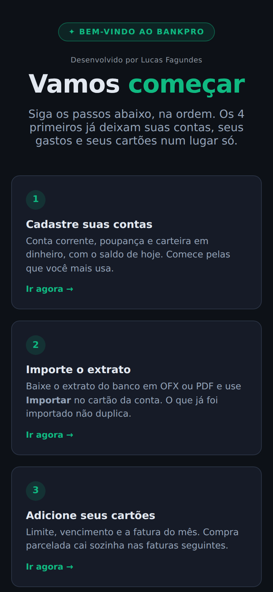
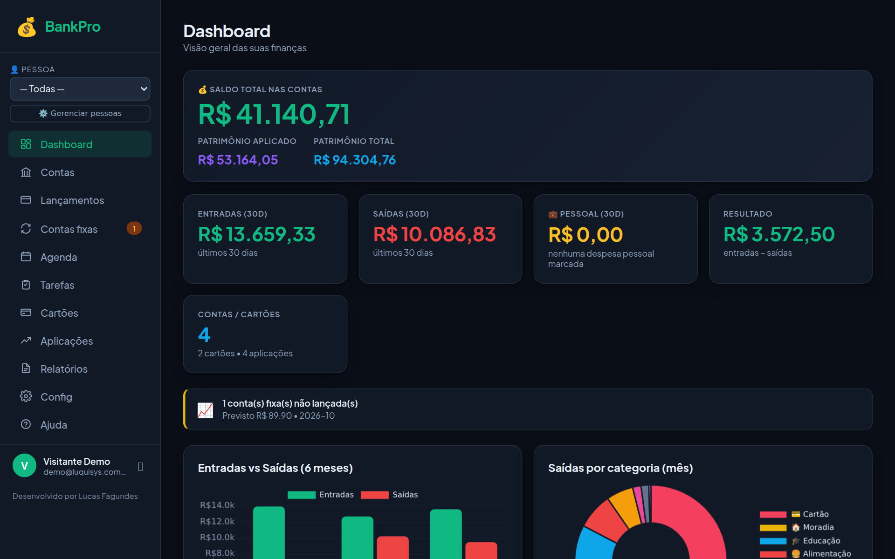
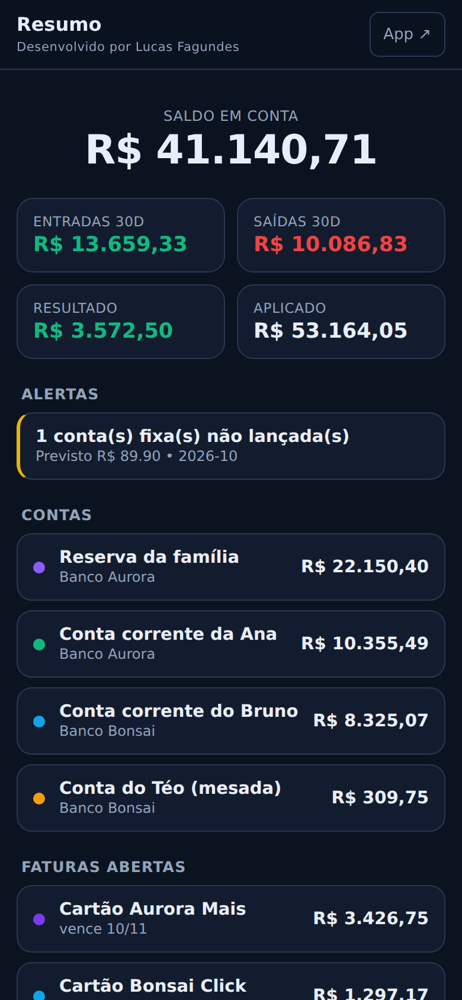
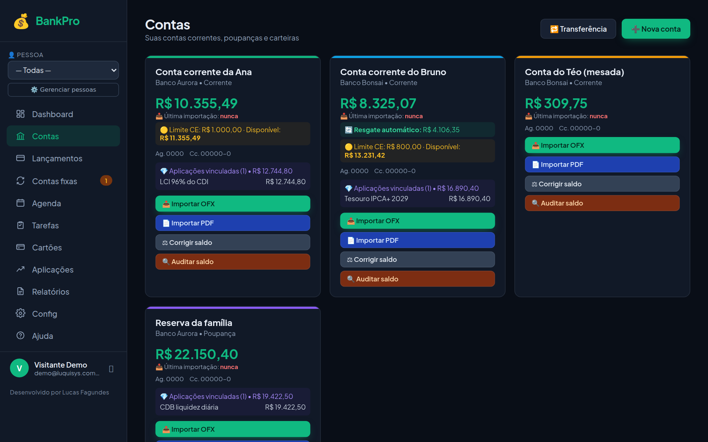
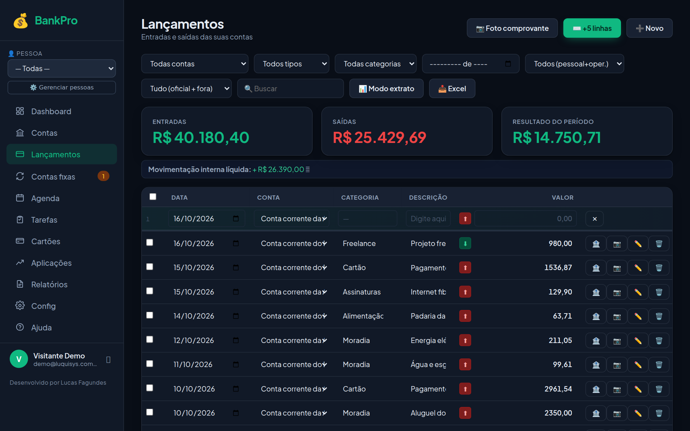
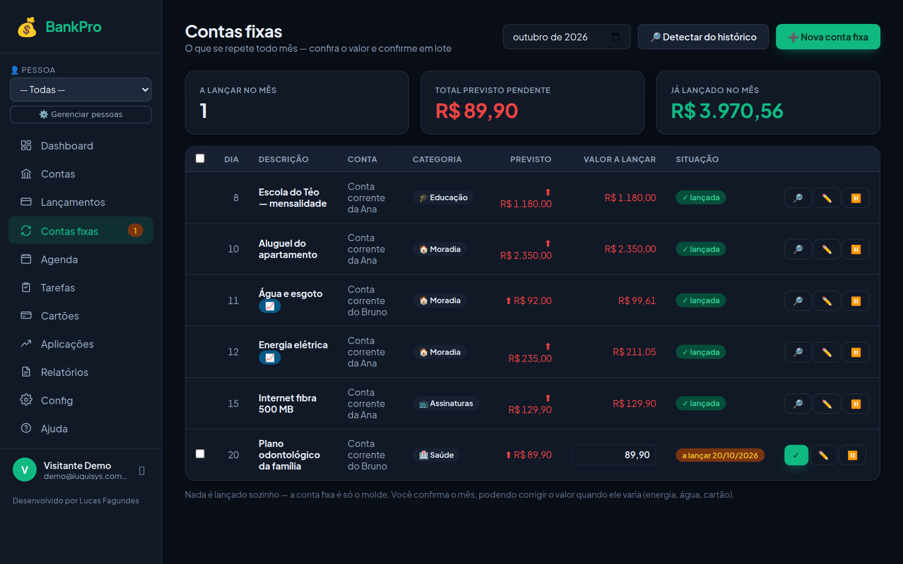
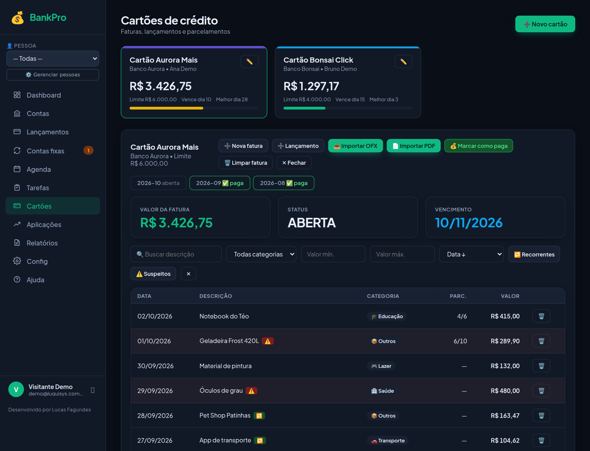

Do primeiro acesso até as finanças organizadas: o que cada tela faz, a ordem de configurar e as dúvidas mais comuns.
No navegador do celular ou do computador: bankpro.luqsys.com.br
Ainda não tem conta? Toque em Testar 3 dias grátis: nome, e-mail e senha. Já tem? Digite o e-mail e a senha e toque em Entrar.
Chame o suporte no WhatsApp (45) 99107-7788 que a gente libera uma nova. Pra trocar a senha depois: Config → Usuários → ✏️ no seu nome.
Pelo celular, abra bankpro.luqsys.com.br/instalar e siga o passo a passo do iPhone ou do Android. O BankPro fica com ícone na tela, igual um aplicativo.
Depois de entrar com a senha no celular, toque no 🔐 ao lado do botão de sair. Da próxima vez, é só tocar em Entrar com Face ID.
No primeiro acesso o sistema abre a tela de boas-vindas, com 6 passos. Os 4 primeiros já deixam suas contas, seus gastos e seus cartões num lugar só:
Conta corrente, poupança e carteira em dinheiro, com o saldo de hoje.
Baixe o extrato do banco em OFX ou PDF e importe no cartão da conta.
Limite, vencimento e a fatura do mês.
Aluguel, luz, internet, escola. Todo mês você só confere e confirma.
Resultado do mês, gastos por categoria, projeção de saldo e parcelas futuras.
Pra ter o BankPro a um toque.
Depois toque em Ir pro sistema →. Dá pra rever esses passos quando quiser pela Ajuda, no menu.

O resumo de tudo: saldo somado das contas, patrimônio aplicado e total, entradas e saídas dos últimos 30 dias, o resultado, gráficos dos últimos 6 meses e de saídas por categoria, suas contas e as faturas abertas. Aviso de conta fixa ainda não lançada aparece no meio da tela.

Em bankpro.luqsys.com.br/resumo fica uma tela só de leitura, feita pro celular: saldo, entradas e saídas, alertas, contas e faturas abertas numa rolagem só. Também vira atalho na tela de início quando você instala.
Cada conta e cartão pode ter um Titular. No topo do menu, o filtro 👤 Pessoa mostra só os números daquela pessoa. Em ⚙️ Gerenciar pessoas você renomeia ou junta nomes repetidos.
O botão 🤖 no canto da tela responde perguntas sobre seus saldos, gastos, cartões e aplicações.

Em Contas → ➕ Nova conta: nome, tipo (corrente, poupança, investimento ou carteira em dinheiro), banco, agência, titular, saldo inicial e cor. O limite do cheque especial não entra no saldo, só no "disponível".

| Transferência | 🔁 Transferência lança a saída numa conta e a entrada na outra. |
| Carteira em dinheiro | Conta sem extrato. Quando sacar no banco, use 💵 Saquei. |
| Saldo não bate | 🔍 Auditar saldo mostra ajustes e lançamentos repetidos. ⚖ Corrigir saldo cria um ajuste com a diferença pro saldo real. |
| Desfazer importação | Abra a conta e use 🗑 Apagar importados: apaga só o que veio de OFX ou PDF no período escolhido. |

Nada é lançado sozinho. O número ao lado de Contas fixas, no menu, mostra quantas faltam no mês.

| Cadastrar | ➕ Novo cartão: nome, banco, titular, limite, dia de vencimento e melhor dia de compra. |
| Fatura | Toque no cartão: uma aba por mês. 📤 Importar OFX ou 📄 Importar PDF com a fatura do banco, ou ➕ Lançamento pra uma compra. |
| Parcelado | No lançamento, valor de cada parcela e Parcelas (total): cada parcela cai na fatura do mês dela. |
| Pagar | 💰 Marcar como paga: data, conta de onde saiu e valor. Entra como saída nessa conta. Errou? ↩️ Desfazer pagamento. |

➕ Nova aplicação: CDB, LCI, LCA, poupança, fundo, Tesouro ou ações, com banco, conta vinculada, valor, vencimento, taxa e índice. Pra atualizar, 📄 Importar PDF com o extrato do banco ou da corretora: a posição mais recente vira o valor atual.
| DRE mensal | Entradas, saídas e resultado do mês, por categoria. |
| Projeção de saldo | Como fica o saldo em 30, 60, 90 ou 180 dias, e o momento mais apertado. |
| Por categoria | Gastos do mês por categoria. |
| Assinaturas | O que se repete todo mês, pra cortar o que não usa. |
| Gastos suspeitos | Lista pra revisar. |
| Parcelas futuras | O que já está comprometido nos próximos 12 meses. |
Filtre por conta, por cartão ou por pessoa, um de cada vez.
| Outros usuários | Config → Usuários → ➕ Novo: nome, e-mail, senha e papel. Viewer só vê, Editor mexe nos dados, Admin tem acesso total. A pessoa enxerga os mesmos dados que você. |
| Log de atividades | Em Config: quem fez o quê. |
| Tarefas | O que fazer, comprar ou pagar, com data, prioridade e subitens. O botão 📱 iPhone dá o link pro Calendário do iPhone. |
| Agenda | Cole o link público do seu calendário do iPhone em 📅 Calendários: os compromissos aparecem junto com as tarefas. O BankPro só lê. |